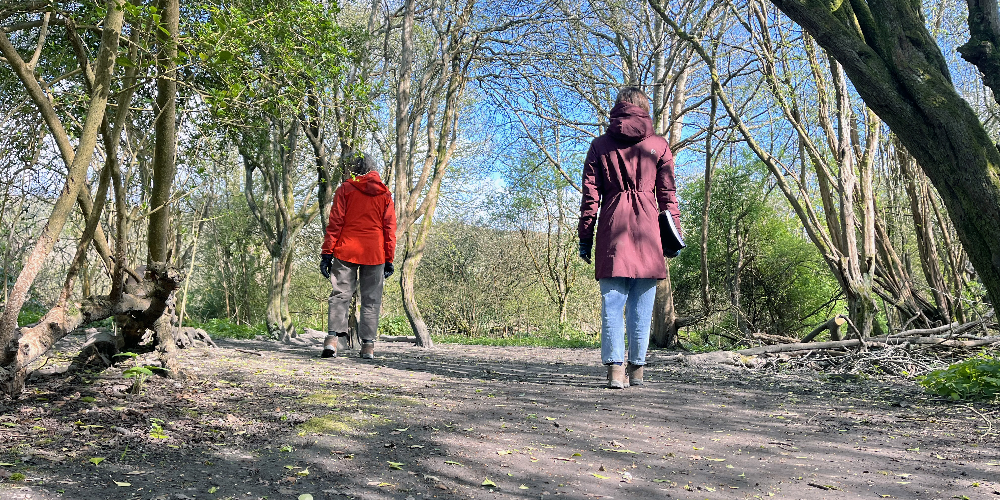

Take part in research: Share your experiences of Knepp!
Rewilding is often seen as a powerful solution to address climate and biodiversity crises but it also has personal, social and cultural impacts, which are not yet well understood. We are researchers at the University of Sussex looking for people to take part in 'experience walks' and interviews at Knepp in the first two weeks of June 2026. Our research aims to understand how people feel when they explore rewilding landscapes and notice changes.
How do you feel when you visit Knepp?
What do the changing landscapes and species mean to you, personally?
What are the aims of the study?
We are co-developing participatory and creative methods to understand how people are affected by changing landscapes and species. Successful environmental decision-making must engage with social and cultural needs. So understanding people’s experiences of rewilding is important, but it has not yet been explored in detail. We are interested in how these changing environments are sensed and what they mean to different people.
Our aim is to bring these subtle but powerful and important aspects of human experience into future decision making and management. For further information about the study, view the Participant Information Sheet.

What does participation involve?
Participation is free and involves a guided walking interview at a convenient time for you between June 1st and June 12th 2026. There is then a short feedback survey, and optional focus group in July.
Your interview will last between 90 minutes and two hours. It is one-to-one with a researcher from the University of Sussex. During the interview, we discuss your relationship with Knepp and explore how your experience of place is shaped by your perspective, perceptions and feelings. At one point, we also sit down to focus on a specific moment during the walk in more depth.
After the interview, you’ll receive a feedback survey to complete online. You will then be invited to join a focus group with fellow participants. The focus group is an opportunity to chat about emerging themes from the research together, over tea and biscuits and explore potential co-creative outcomes (e.g. community mapping or archiving).
While there is no financial compensation for taking part in the study, we offer a complementary £15 voucher for Knepp Kitchen. Many people enjoy having time and space to reflect on their personal connection with nature and ecological change!
Who can take part?
- Visitors – you have previously visited Knepp or plan to visit before June 1st
- Staff and Volunteers – you work at Knepp in any capacity as an employee or volunteer or you have previously worked or volunteered at Knepp
- Local residents – you live beside, near or in the estate, or your place of work or residence is directly affected by activities at Knepp
- Decision makers – you represent an organization that is directly or indirectly connected with Knepp and/or the projects taking place there
To book your interview time, click the button above or paste the URL into your browser: https://universityofsussex.eu.qualtrics.com/jfe/form/SV_3pW8kumH0xUXxBk
As this is a research project, the form asks for some information about you. There are also questions to check that we have given you enough information about the project so that you can make an informed choice to participate.
We would be grateful for your insight!
And we hope you may enjoy the opportunity to reflect on your experiences of such a dynamic landscape.
Research team
Alice Eldridge, Principal Investigator
Professor of Sonic Systems, University of Sussex
Lucy Sabin, Co-Investigator
Research Fellow in Conservation Humanities, University of Sussex
For queries about the research and taking part, email Lucy at ls763@sussex.ac.uk